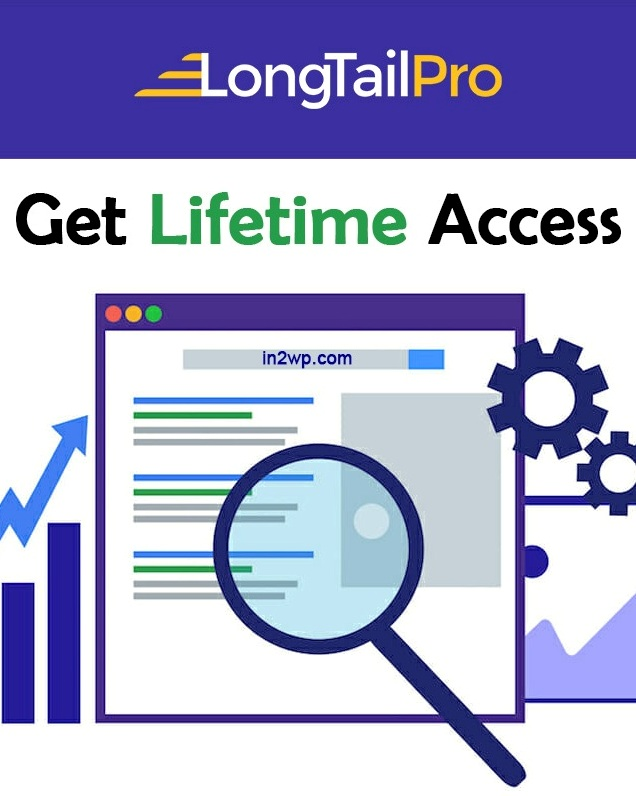
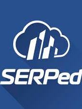
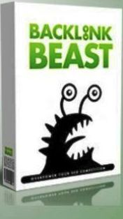
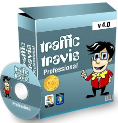
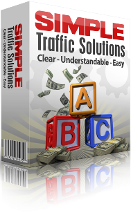
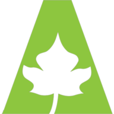

-

LongTail Pro
Save hours of your time and get better rankings. Use long tail pro’s step-by-step system to discover thousands of profitable keywords and calculate keyword competitiveness for any niche. Find low competition keywords for your site in minutes. Exact search volume, and keyword competitiveness long tail pro provides exact search volume data, as well as our industry-leading keyword competitiveness metric. You can search for specific keywords, or get hundreds of keyword suggestions at a time. Find hundreds of new low competition keywords. Use the google AdWords suggestions to find hundreds of new related keywords in minutes, for any country or language. Pick the best keywords, with personalized metrics. View your domain statistics and pick the best keywords for your site. Use target to find out which keywords are easy, which ones will take extra effort, and which ones to avoid. -

Magic Submitter
You’ll finally experience the success that only internet marketing experts can get because you’ll have a 100% GUARANTEED way to get to the top of Google. Magic Submitter levels the playing field and gives you the ability to drive thousands of new customers to your website 24 hours a day, seven days a week. You’ll get your site ranked at the top of Google 10x faster than you normally would. Whether you’re using videos, articles, blogs, bookmarking, RSS feeds, or even forums to market, Magic Submitter will do it all for you. It spins and submits your articles, videos, blogs, and press releases to over 500 sites and gives you 1000’s of backlinks automatically. Plus you can instantly add 100’s of additional sites. -

Serped
All-in-One SEO Tool Suite for In-House SEO Teams from keyword research and backlink analysis to rank tracking. Reporting everything you need to outrank competition and generate more traffic. A comprehensive suite of 40+ SEO tools. SERPed unifies all the must-have tools needed to rank higher, outperform the competition and grow your business keyword research. The fastest, easiest and most robust tool for profitable keyword discovery SEO Analysis. One interface to explore sites, backlinks and get the most crucial SEO metrics site management. Manage and track all your projects seamlessly, from one single interface Rank Tracking Detailed. Rank tracking for all major search engines, across different devices and geographies client acquisition grow your business and gain more clients with a complete suite of client acquisition. -
Seopressor
Take maximum control of Your WordPress. SEO Pressor plugin gives you maximum SEO clarity on your WordPress sites with a host of customization & optimization features designed for controlling SEO with ease. All the Essentials at one Glance SEO Pressor gathers the most essential SEO intelligence of your website and present them in one place. You can gain important insights to your website’s SEO health with crystal clear clarity. Delivering Real Results for More Than 5 years powering more than 23 million WordPress pages worldwide, delivering tangible competitive edge to our trusted customers since our first iteration dating back to 2010. Revolutionary Google-Emulating On-Page SEO Analysis SEO Pressor’s brand new 2016 algorithm is formulated based on semantic big data analysis of more than 3 billion rows of data. We are here to push you to the top of search ranking. -
Niche Laboratory
Niche Laboratory Pro is a niche research tool that allows you to find valuable opportunities for making money online. You can research entire niches in seconds. Find long tail keywords, related niches and much, much more. Get The Niche Laboratory Pro + Blog Spy SEO Tools Bundle Niche Laboratory Pro for Windows PCs researches entire niches for you in seconds. Find long tail keywords, related topics, influencers and hidden opportunities today. Blog Spy shows you which blogs you're competing with, and what they're blogging about. When you buy the software you get FREE updates (for as long as the product is in active development). To get started, simply download and install the software on a PC running Microsoft Windows. Add your initial keyword phrase and click on the Research Niche button. After a minute or two the Niche Laboratory will then generate you a report with a lot of useful information about your keywords. You can use this report to give your ideas when brainstorming a new micro-niche site, or even help you with your homework assignments. There's also a Random Niche button if you're all out of ideas and need some inspiration. -

BackLink Beast
Keep out of Google's crosshairs, and relax knowing that YOU are in complete control of your linking and rankings! Use Backlink Beast to automate these link tiers. Protect your money site while hammering it with reputable links from what we call "buffer links". These buffer links act as barriers to any potential over-optimization of using too many exact match target keywords in the links to your money site. Essentially, the link tiers act as a "buffer" for your money site! And THIS is how to protect your money site. Do NOT hammer away at your money site like we did back in the day with nothing but our target keywords. Those days are long gone! Here's a quick example... First build links to your money site using "URL as anchor text" or generic keywords as anchor text, from a few higher quality submissions in Backlink Beast. We'll call this Tier B links. From there, auto-build tons of other links using your target keywords, and variations of them to your Tier B links (controlling the anchor text used within Backlink Beast). We'll call these Tier A links. You can even take it further and build even more new links to your Tier A links... and so on... -
Trafficx Tractor
Page 1 of google & youtube in minutes! Software gets as much free traffic as you want with a few clicks of your mouse page 1 of both google & youtube in less than 3 minutes in any niche! It’s no fun spinning your wheels and struggling to get things going. Especially when you’re buying a bunch of courses, trying hard, and chasing money. If this sounds like you, we've found that there’s one thing in your online business that you rarely have enough of that will pretty much fix everything. The answer is more traffic and not just any traffic. Traffic that converts and actually makes you money. Just like you, we all had traffic problem too, and we tried just about everything under the sun to get traffic flowing fast. Paid traffic. Free traffic. You name it. As you probably already know, paid traffic can quickly cost you a small fortune and free traffic usually isn’t so free. Your time has a value and if you’re spending hours on end to get traffic flowing, it’s probably not worth it in most cases. Especially since most “free” traffic is based on loopholes that eventually peeter out pretty quickly if you’re not continually putting work into it. That’s pretty far from the “internet lifestyle” that most dream about a few months back, we all got together to talk about how we could get traffic flowing without spending a ton of money on paid traffic and without investing countless hours of our time creating backlinks, writing articles, and doing all that “normal” traffic-generation stuff. We went into a brainstorming sessions and took turns sharing ideas for getting more traffic without breaking the bank. Around we went. Pretty much nothing new came to the surface. Then alex said. I’ve been doing something pretty unique with simple little videos to get really solid traffic that converts well. -

Traffic Travis
Improve your website's search engine rankings. Perform a full SEO health check on any website. Uncover technical mistakes that may affect your rankings. Find out why competitors outrank you, then beat them! Keep tabs on your competitors to spot keywords you should target. Monitor your search engine rankings so you know where to focus your efforts. Find respected link partners and build quality backlinks, easier. -
Free Monthly Websites
Free Monthly Websites has been one of the leading providers of FREE websites for over TEN YEARS, with over 50,000 people taking advantage of the free website we have offered each and every month. These websites are content rich, cash generating websites that earn you affiliate commissions from multiple affiliate sources. You now have the chance to own a brand new, content rich, easy to edit, cash generating website each and every month at a cost of... zilch, zero, nada, nothing! You can download this website totally FREE! -

Simple Traffic Solutions
Simple Traffic Solutions reveals the secrets to tried and tested sustainable traffic methods without the help of Google, Facebook PPC or SEO techniques. Simple Traffic Solutions uses simple but highly effective tried and tested methods that I use in my business on a daily basis. Anyone can copy my traffic methods to build endless traffic streams to their business. I have been trying and testing these methods for over 10 Years and earned millions of dollars in the process so I know my methods work! -

Trafficivy
High quality traffic is either expensive, or hard work... or is it? New revolutionary cloud based app gets guaranteed real free traffic anytime you want! Works for list building, blogging, affiliate offers, E-com, social marketing & more. get real, actual trackable, guaranteed clicks drive laser-targeted traffic using our massive growing network of blogs spread across 22 categories beginner friendly way to see real results without any learning curve or risky paid traffic methods post your content on 1,000's of active social media accounts on fb, twitter, Pinterest, LinkedIn & reedit go viral with multiple people sharing it on multiple social media accounts within our huge network community driven rating system to guarantee you only the best high-quality, relevant traffic available. -
CashBlurbs
We recently launched our built in 'featured cashblurbs free tool, which can very easily triple the traffic to your offers, especially when you become an unlimited member. Upon the release of the featured cashblurbs tool, I personally ran a 24 hour case study using my own 'cashblurbs unlimited membership' account, to test it out as usual, I began receiving traffic and clicks almost instantly. Only this time, it was considerably more than normal! And then, just 4 hours and 11 minutes into the test, I’d made an affiliate commission of $21 - on a click sure product called 'easy fb commissions'. Sweet!! cashblurbs (which are simply short text ads placed on our site, and shared by our members on their twitter and Facebook pages), take just a minute or two each to post. So I actually spent very little time in order to start getting traffic and affiliate commissions. -
WP Speedy Links
Now there's an easy way to monetize your entire WordPress website or blog for any keyword introducing WP Speedy links is a powerful WordPress plugin that very simply allows you to monetize your entire WordPress website or blog for any keyword with the click of a button. All you have to do is add the keyword you want to target, and add the URL you want it to go to, this can be any of your own products, affiliated products, like ClickBank or Amazon, or even just link to any of your social sites like Facebook or Twitter. Guarantee! There is no risk whatsoever.
ADBTC
This website allows you to get free bitcoin. It is better than bitcoin faucet, it is not btc miner, just earn bitcoin online for viewing web pages, mostly bitcoin sites. Internet advertising is evolving and now you have the right to get paid for it! Earn bitcoin online free and withdraw it to your Bitcoin wallet.
More Info...Promote Your Website Free
EasyHits4U is the most popular traffic exchange program on the Web with over 1,664,000 registered members. Our program allows you to promote your own sites, referral/affiliate links from other programs, banner and text ads to other registered members, and build your own downline here. We have delivered large volumes of traffic to our members' sites since 2003.
More Info...BestChange
BestChange monitors automatic electronic currency exchangers. The service permanently monitors the largest and most reliable exchangers for you to always know at what exchanger you can exchange one electronic currency for another at the best rate. The exchange rates and currency reserves are updated every 5 seconds for all exchangers in the list.
More Info...